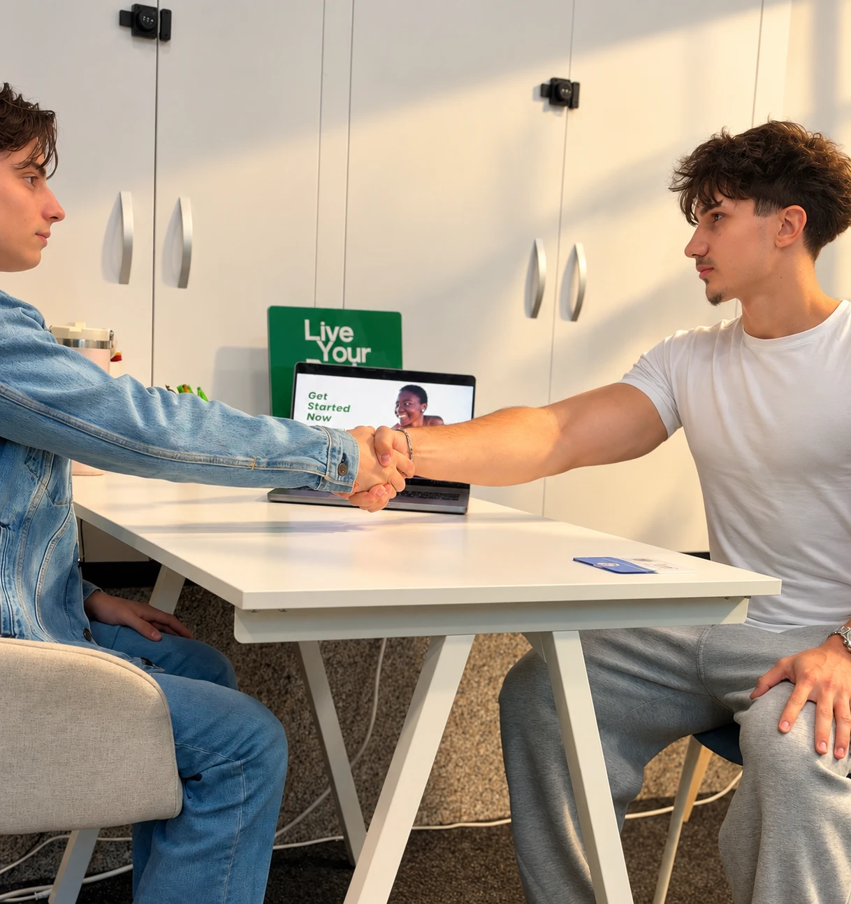
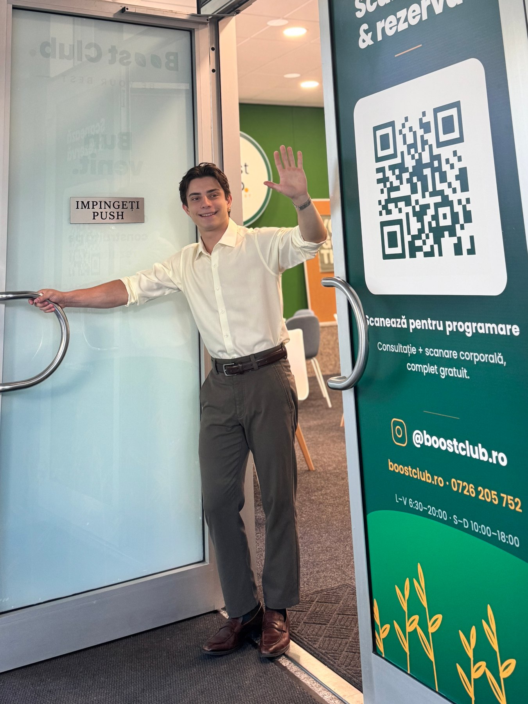
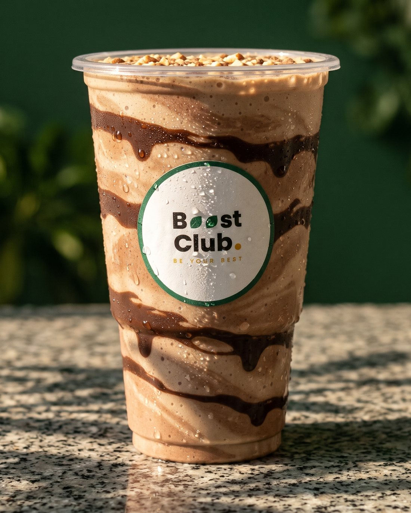

Ce se întâmplă la vizită.
25–30 de minute, structurate și clare. Iată exact la ce să te aștepți la prima vizită la Boost Club.

Înainte să vii.
Nu ai nevoie de pregătire specială. Câteva recomandări simple pentru un rezultat cât mai precis.
Hidratare normală
Bea apă în mod normal în ziua vizitei. Evită alcoolul sau consumul excesiv de lichide cu câteva ore înainte. Acestea pot afecta măsurătoarea.
Haine comode
Vino în haine ușoare și confortabile. Nu este nevoie de echipament sport sau de schimbat. Consultația nu implică antrenament.
Rezervă 40 de minute
Sesiunea durează 25–30 de minute. Nu te grăbi. Cel mai valoros moment este discuția de după măsurătoare.
Pas cu pas. Ce se întâmplă.


- Slăbire sănătoasă
- Masă musculară
- Mai multă energie
- 01
Scurtă discuție
Gabriel te întâmpină și aflăm de unde pornești și ce vrei să schimbi. Durează 5 minute, într-un cadru relaxat.
- 02
Analiză corporală
Gabriel îți explică fiecare pas al măsurătorii compoziției corporale. Contactează clubul înainte de vizită pentru instrucțiunile de pregătire specifice aparatului.
- 03
Rezultatele, explicate
Primești raportul complet, tradus pe înțelesul tău, nu doar cifre pe hârtie.
Exemplu de scanare · pe segmente - 04
Obiectivul tău
Vorbim despre ce vrei: slăbire, masă musculară sau energie. Fără șabloane.
- Slăbire sănătoasă
- Masă musculară
- Mai multă energie
- 05
Primul pas, clar
Pleci cu o recomandare concretă și realizabilă.
Ce vei afla despre corpul tău.
Exemplu de rezultat. Cifrele tale vin din propria scanare. Nu este un diagnostic medical.
- 01
Masă musculară
Cât mușchi ai și cum e distribuit
- 02
Masă adipoasă
Procentul de grăsime și dacă e în interval sănătos
- 03
Apă corporală
Nivelul de hidratare al organismului
- 04
Grăsime viscerală
Grăsimea din jurul organelor, cheia sănătății metabolice
- 05
Vârstă metabolică
Cât de eficient lucrează metabolismul tău
- 06
Rata metabolică
Câte calorii arzi în repaus, baza oricărui plan
Ce fel de îndrumare vei primi.

MâncareObiceiuri alimentareGhidare practică pentru o alimentație echilibrată care se potrivește stilului tău de viață real, nu unui plan ideal imposibil de urmat.
Sugestii despre frecvența meselor, hidratare și micro-obiceiuri care susțin obiectivul tău fără să-ți bulverseze programul.
 MișcareMișcare și activitate
MișcareMișcare și activitateRecomandări generale despre tipul și frecvența activității fizice potrivite pentru tine, indiferent de nivelul actual de condiție fizică.
O singură acțiune clară pe care o poți face în săptămâna care urmează. Nu o listă copleșitoare. Un pas realizabil.

Vrei să vezi de unde pornești?
Rezervă evaluarea corporală gratuită și pleci cu un plan clar.
Întrebări înainte de prima vizită.
Trebuie să fiu „în formă” ca să vin?
Poți începe printr-o discuție despre obiectivele și rutina ta, indiferent de experiența ta cu sportul.
Cum se desfășoară evaluarea corporală?
Folosim un analizor profesional de compoziție corporală. Întreabă-ne despre aparat și despre cum să te pregătești înainte de vizită.
Rezultatele sunt un diagnostic?
Nu. Sunt estimări, explicate ca punct de pornire pentru discuția despre obiceiuri. Evaluarea nu înlocuiește consultația medicală.
Pot aduce pe cineva cu mine?
Da, poți veni cu un partener, prieten sau membru al familiei. Spune-ne când stabilești vizita.
Ce se întâmplă după vizita gratuită? Pleci cu rezultatele și explicațiile tale. Dacă vrei să continui, îți arătăm opțiunile de sprijin, ce includ și cât costă.